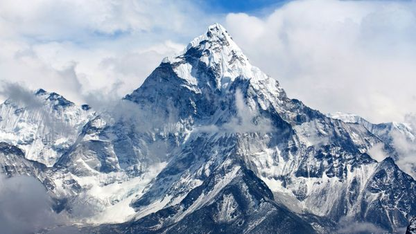

FOTO. Las islas Pitcairn son un verdadero reto para todos los viajeros
En tiempos de Uber y de servicios al instante que solo requieren de la presión del dedo sobre una pantalla, resulta sorprendente que todavía existan lugares remotos transformados en paraísos turísticos que llevan la carga de ser escandalosamente difícil de llegar.
También resulta llamativo que, en 2017, haya sitios que nunca fueron habitados (ni visitados) por el hombre. El informa lo realizó RealLifeLore, que publicó un video interactivo en su cuenta de YouTube explicando cómo el mundo ha avanzado en los tiempos de trayectos, aunque aún persisten otros tantos que se vuelven caóticos.
Un mapa de 1914 detalla lo que en la actualidad sería impensado: tardar 5 días o más para viajar a Europa. Casi un mes para estar en Estados Unidos y ni hablar de concretar el sueño de conocer Sidney. Claro que en ese entonces los transportes no eran los mismos que se ofrecen hoy en día, siendo el viaje aéreo el protagonista fundamental de la evolución.
Un viaje eterno puede trasladar a una persona desde Buenos Aires hacia las islas (Shutterstock)
Pero en la vereda opuesta se ubican sitios en el que llegar se puede volver tedioso. El gran ejemplo lo regalan las Islas Pitcairn, que conforman un archipiélago que forma parte de la Polinesia en Oceanía, en donde el clima tropical se mantiene todo el año. Solo viven 49 personas y la tierra para construir una vivienda es gratuita. Pero claro, no tiene aeropuerto y la isla más cercana está a cientos de kilómetros. ¿Los barcos? Rara vez la visitan.
Este es el lugar más remoto del mundo. Para llegar hasta allí, hay que combinar varios factores: dinero, paciencia y conexiones. Un vuelo hacia Estados Unidos (conexión previa para llegar a Los Angeles) y desde allí volar a Tahití. Esto puede demorar -mínimo- un día entero. En Tahití, viajar en avión hacia otra isla, Monica Raiva, la más cercana a Pitcairn, en donde el vuelo demora cinco horas y media. Y pasa sólo una vez por semana.
Este es el lugar más remoto del mundo. Para llegar hasta allí, hay que combinar varios factores: dinero, paciencia y conexiones. Un vuelo hacia Estados Unidos (conexión previa para llegar a Los Angeles) y desde allí volar a Tahití. Esto puede demorar -mínimo- un día entero. En Tahití, viajar en avión hacia otra isla, Monica Raiva, la más cercana a Pitcairn, en donde el vuelo demora cinco horas y media. Y pasa sólo una vez por semana.
Todavía queda viaje. 531 kilómetros separan Monica Raiva de Pitcairn y ya no hay avión que acelere la travesía. Un solo barco de suministros, que sale una vez cada tres meses, es la única posibilidad para alcanzar el tan ansiado objetivo. Son 32 horas de navegación, más todo lo acarreado, acumulando casi 3 días enteros para llegar a este paraíso.
Las cumbres también ingresan en esta categoría de "lugares remotos casi imposibles de acceder". Si bien presentarse en la base no resulta complicado, llegar a la cima es para pocos. La montaña llamada K2, que es la segunda más alta del mundo (8.611 metros), ha tenido solo 300 personas que consiguieron llegar a su cima, mientras que setenta y siete han muerto intentando. Es decir: uno de cada cinco personas falleció buscando alcanzar la cima.
El Everest posee la cima más alta del mundo
Posee una extrema dificultad y es el lugar más difícil de llegar. Sin embargo no supera a la Gangkhar Puensum, a 7.570 metros de altura, algo que nadie ha conseguido escalar. El Everest, por su parte, con sus 8.848 metros de altura ha sido un logro conseguido por 3000 personas aproximadamente. En el intento, unas 323 fallecieron.
Otra de las cumbres más altas de esta categoría sería Muchu Chhish, a siete mil cuatrocientos cincuenta y tres metros de altura. Es increíblemente exigente y sólo se ha intentado escalarla dos veces.